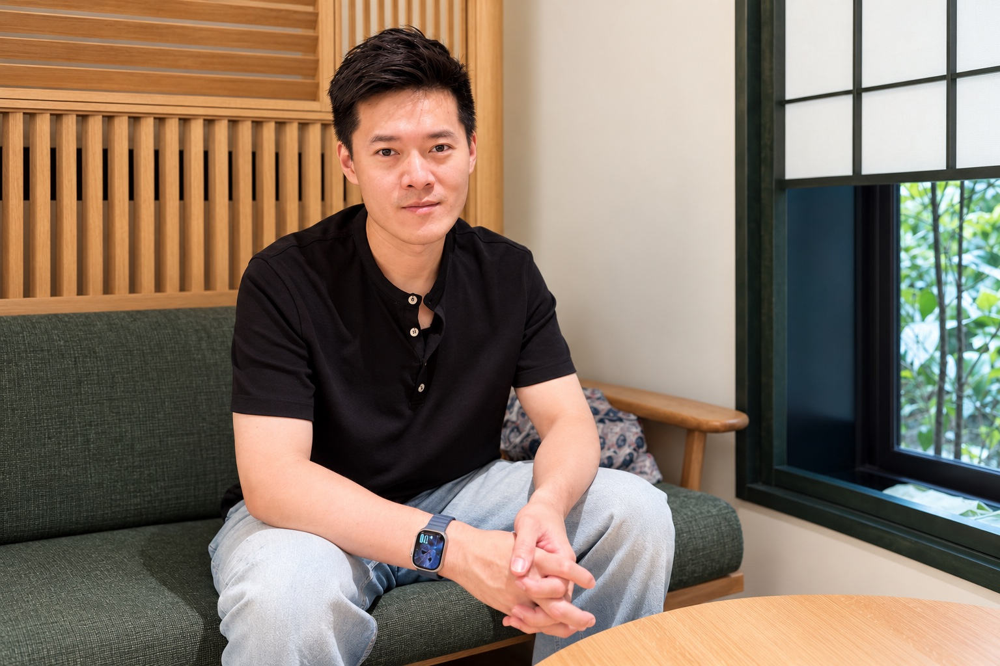

Health Column
小廖專欄
把診間常見的疑問，整理成看得懂、查得到、帶得走的健康資訊。你可以從減重起點、飲食方法、中醫體質或用藥安全開始閱讀。
Featured
本期精選
蛋白質不是瘦瘦針，但能讓減重餐更有飽足感，也比較有機會守住肌肉。

為什麼減重時更要吃夠蛋白質？
吃到適合自己的份量，比盲目追求高蛋白更重要。
閱讀完整專欄 →Weight Management
減重起步與門診
從開始前的記錄、門診評估，到停滯期與常見疑問。
開始減重前，要記錄哪些數字？
用 BMI、腰圍、生活與症狀記錄，建立可比較的起點。
閱讀文章 → 門診評估竹北減重門診怎麼評估？
第一次看診前可以準備什麼？評估時會看哪些資訊？
閱讀文章 → 停滯調整減重卡關怎麼辦？
從飲食、活動、睡眠與壓力重新檢查停滯期。
閱讀文章 → 竹北減重竹北中醫減重怎麼做？
體重之外，門診還會綜合評估哪些身體與生活狀況？
閱讀文章 → 新竹減重新竹中醫減重怎麼做？
飲食順序、餐盤份量與整體評估的執行原則。
閱讀文章 → 常見問答中醫減重常見問題
減重速度、飲食、埋線與看診前準備一次整理。
閱讀文章 → 竹北 FAQ竹北減重常見問題
閱讀文章 → 新竹 FAQ新竹減重常見問題
閱讀文章 →Food Guide
飲食與日常選擇
不把食物貼上絕對的好壞標籤，而是看份量、搭配與情境。
改變進食順序有助減重嗎？
先吃蔬菜或蛋白質的證據怎麼看，實際又該怎麼吃？
閱讀文章 → 蛋白質為什麼減重時更要吃夠蛋白質？
蛋白質不是瘦瘦針，但能增加飽足感，也有助於盡量保留肌肉。
閱讀文章 → 飲料健康飲料也有隱形糖？
果汁、運動飲料與調味乳品該注意的糖與份量。
閱讀文章 → 手搖飲珍珠奶茶的糖從哪裡來？
甜度、配料與杯量，都可能讓總糖量超出預期。
閱讀文章 → 主食減重不能吃地瓜嗎？
地瓜仍屬全穀雜糧類，重點是份量與當餐的搭配。
閱讀文章 → 脂肪來源酪梨適合減脂期吃嗎？
營養密度高不代表沒有份量，食用時要算入當餐脂肪。
閱讀文章 → 水果晚餐只吃水果會瘦嗎？
只用水果代替正餐，可能遇到哪些營養與飽足問題？
閱讀文章 →TCM Constitution
中醫體質與日常調理
從望聞問切、常見症狀與生活記錄，理解體質評估在看什麼。
濕氣重會讓人變胖嗎？
先區分脂肪、水腫、體重波動，以及需要就醫的警訊。
閱讀文章 → 望聞問切中醫把脈到底在看什麼？
脈象是辨證的一部分，不應脫離症狀、舌象與問診單獨解讀。
閱讀文章 → 竹北體質竹北體質調理怎麼看？
把睡眠、食慾、腸胃、排便與壓力放在同一張圖上評估。
閱讀文章 → 新竹體質新竹體質調理怎麼看？
中醫體質評估如何連結日常作息、症狀與追蹤。
閱讀文章 → 婦女健康月經週期怎麼從中醫調理？
從週期記錄、不適表現到該何時就醫的基本判斷。
閱讀文章 → 過敏照護過敏體質如何日常照護？
環境、作息、症狀記錄與醫療評估要怎麼配合？
閱讀文章 → 食養日常枸杞與清熱食材怎麼吃？
沒有一種食材適合所有人，份量與當下狀態才是重點。
閱讀文章 →Safety & Treatment
用藥安全與療程評估
處方藥、中藥與侵入性處置都需個別評估，不用一句話取代問診。
About This Column
每篇內容都留下來源與更新資訊
專欄提供一般衛教，不取代個別診斷、處方或急症處置。